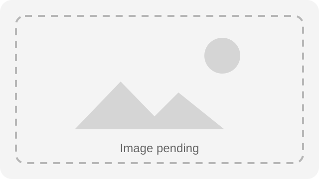

Purpose
Describe the page responsibility.
Production-ready page purpose and visitor outcome.

Describe the page responsibility.
Summarize current availability or lifecycle state.
Route users to the next approved action.
| Field | Value |
|---|---|
| Template Type | Theme V2 Page |
| Chrome | Shared partials |